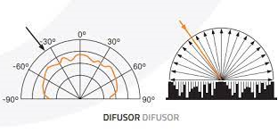

La difracción es un fenómeno que afecta a la propagación del sonido. Se habla de difracción cuando el sonido se dispersa como consecuencia del encuentro con obstáculos que no le son transparentes.
La explicación la encontramos en el Principio de Huygens que establece que cualquier punto de un frente de onda es susceptible de convertirse en un nuevo foco emisor de ondas idénticas a la que lo originó. De acuerdo con este principio, cuando la onda incide sobre una abertura o un obstáculo que impide su propagación, todos los puntos de su plano se convierten en fuentes secundarias de ondas, emitiendo nuevas ondas, denominadas ondas difractadas.
La difracción se puede producir por dos motivos diferentes:
porque una onda sonora encuentra a su paso un pequeño obstáculo y lo rodea. Las bajas frecuencias son más capaces de rodear los obstáculos que las altas. Esto es posible porque las longitudes de onda en el espectro audible están entre 1,7 cm y 17 m, por lo que son lo suficientemente grandes para superar la mayor parte de los obstáculos que encuentran.
porque una onda sonora se encuentra con un pequeño agujero y lo atraviesa.
La cantidad de difracción estará dada en función del tamaño de la propia abertura y de la longitud de onda.
Si una abertura es grande en comparación con la longitud de onda, el efecto de la difracción es pequeño. La onda se propaga en líneas rectas o rayos, como la luz.
Cuando el tamaño de la abertura es menor en comparación con la longitud de onda, los efectos de la difracción son grandes y el sonido se comporta como si fuese una luz que procede de una fuente puntual localizada en la abertura.

Prodrias ver este video para poder entender mas sobre el tema